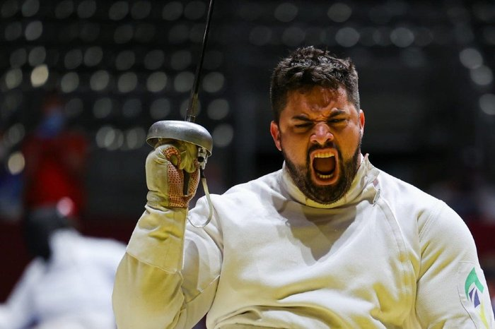
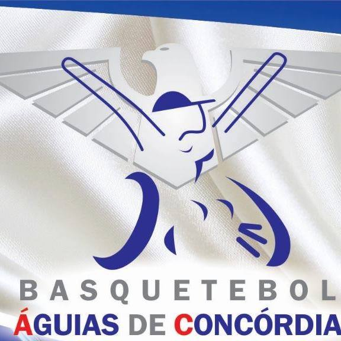
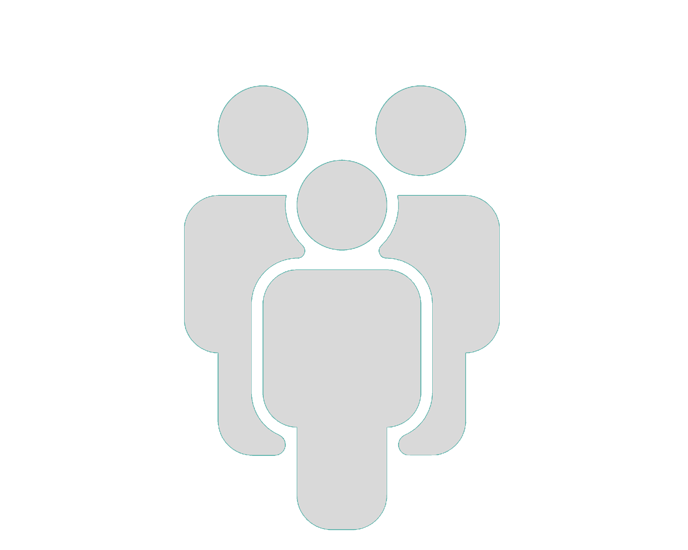
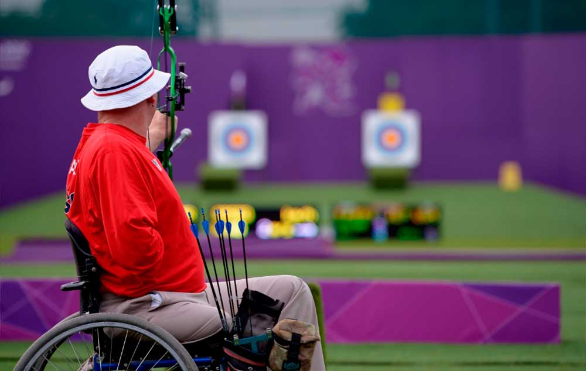

É evidente a extrema importância que o esporte adaptado tem em nossa sociedade nos dias de hoje, por meio deste,
os PCDs que praticam o esporte podem desenvolver maior independência, melhorar tanto a saúde física como a mental,
melhorar sua socialização e desfrutar de um lazer se sentindo incluídos. No entanto, esse estilo de atividade não
é devidamente abordada e cuidada, falta de investimento, infraestrutura inadequada e exclusão social são mais
comuns do que deveria ser. Este website foi desenvolvido com o intuito de divulgar a causa e abrir os olhos das
pessoas para a importância e a diferença que o paraesporte tem na sociedade atual.
Relatos


De acordo com uma profissional da saúde que tem experiência com o trabalho com cadeirantes, o esporte é um agente importante para a melhora da qualidade de vida do cadeirante. Com o esporte, fatores da saúde física e mental melhoram, porém, um maior investimento público e o respeito à constituição se mostram necessários, pois a falta destes é um empecilho para inclusão e acessibilidade.
De acordo com Jovane Guissone, o campeão de esgrima em cadeira de rodas nas olimpíadas de Londres em 2012 e
medalhista de prata em Tóquio 2020, ele teve sua vida revigorada quando começou a se dedicar à prática do esporte, também diz
que o esporte representa uma superação, já que começou a praticá-lo depois de sofrer um grave ferimento na coluna.
O grupo Águias de Concórdia (Associação De Pessoas com Deficiência Física Águias De Concórdia) é uma organização
sem fins lucrativos que tem como seu principal objetivo desenvolver e incentivar jogos de basquete em cadeira de rodas, o grupo
organiza e realiza jogos de basquete amistosos entre times de esportistas cadeirantes.
A ajuda, colaboração e apoio da comunidade em que o cadeirante
esta inserido é um fator extremamente importante para a plena
inclusão e acessibilidade do cadeirante no esporte. Contando
com o apoio da comunidade o respeito é constante, as cobranças
de mudanças contam com mais vozes e a adaptação de locais físicos
se torna um foco de todos.

Calendário
É de extrema importância que valorizemos os jogos paraolímpicos, estes jogos, além de apoiar,
trazem visibilidade para a causa do esporte adaptado. Ao clicar no botão ao lado você terá acesso a um calendário
com a data de diversos jogos paraolímpicos para que você possa conhecer a data destes eventos e acompanha-los
quando acontecerem:
Sobre Nós
Somos um grupo de estudantes do curso técnico em informática para internet do IFC
campus concórdia. Nesse ano recebemos a tarefa de desenvolver um artigo cientifico e um website
com o tema Inclusão Social: atitudes, percepções e práticas, para afunilar mais o assunto decidimos
nos especializar e escrever sobre a inclusão e a acessibilidade dos cadeirantes no esporte hoje.

O basquetebol para cadeirantes é um dos esportes praticados na cidade Concórdia.
Foi um esporte que teve seu início após a segunda guerra mundial pelos ex soldados norte - americanos feridos, mas apenas em 1947, ocorreu o primeiro jogo oficial.
O arco e flecha foi um dos primeiros esportes adaptados para as paraolímpiadas,
inicialmente era só para a categoria masculina, da mesma forma que o basquetebol o arco e flecha
também surgiu como reintegração.